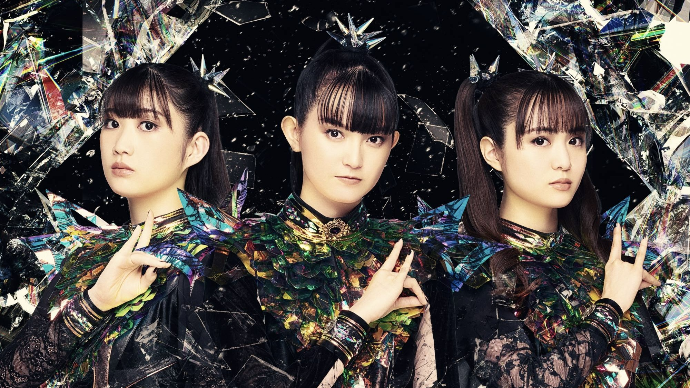
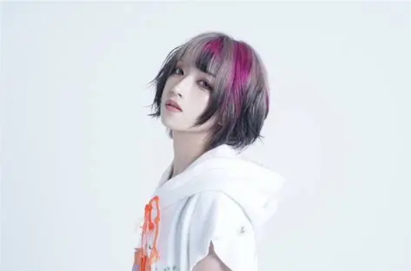

BABYMETAL adalah grup vokal dan tari asal Jepang yang memelopori genre Kawaii Metal, sebuah perpaduan unik antara musik J-pop idol yang ceria dengan irama musik Heavy Metal yang keras dan intens. Grup ini dibentuk pada tahun 2010 dan dengan cepat mendapatkan popularitas di kancah internasional.
Saat ini, formasi BABYMETAL beranggotakan Suzuka Nakamoto (Su-metal), Moa Kikuchi (Moametal), dan Momoko Okazaki (Momometal). Mereka terkenal dengan vokal yang kuat, penampilan panggung yang teatrikal, serta koreografi energik yang diiringi oleh band pengiring live (Kami Band).

Yukina adalah penyanyi solo dalam proyek Aisagasu Eyeshadow (愛探眼影), mantan anggota pendiri pipia, yang sebelumnya terlibat dalam proyek solonya Violet World, serta mantan anggota 9DayzGlitchClubTokyo (sebagai Yukina viz Sirius; ユキナ・viz・シリウス dan Reap Yukina; リィプ・ユキナ).
Dia juga merupakan vokalis dan gitaris grup Lie bling, dan menjadi anggota hingga grup tersebut bubar pada 19 Juli 2021. Sebagai bagian dari Aisagasu Eye Shadow, kehadirannya memberikan warna dan karakteristik tersendiri yang selalu berhasil menarik perhatian para penggemar.